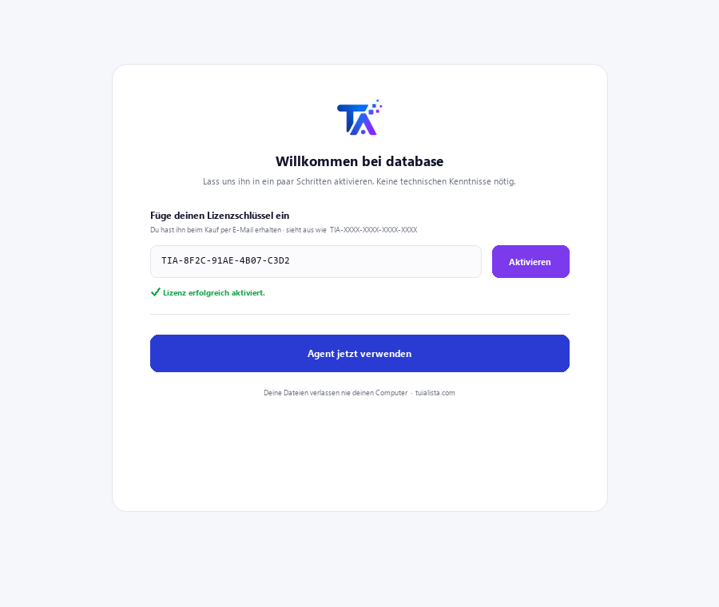
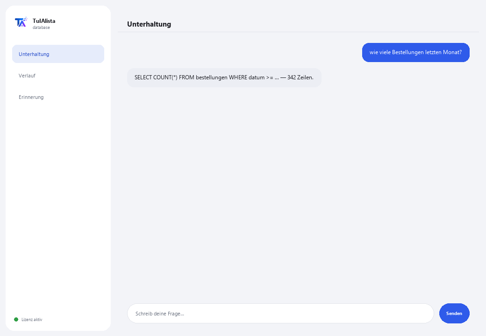

Datenbank-Agent
Verwandelt Ihre Fragen in Abfragen an Ihre Datenbank, ohne dass Sie SQL kennen müssen. Schreibgeschützt: er ändert oder beschädigt Ihre Daten nie.
Was löst er und was brauchen Sie?
In vielen Unternehmen leben wichtige Daten in einer Datenbank, aber nur die technische Abteilung weiß, wie man sie abfragt. Jedes Mal, wenn jemand eine Zahl braucht, muss er die IT bitten, eine Abfrage zu schreiben, und warten. Dieser Agent übersetzt Ihre Frage in Ihrer Sprache in eine SELECT-Abfrage und zeigt Ihnen das Ergebnis — ohne Risiko, etwas zu beschädigen.
- Sie brauchen: Ihren Lizenzschlüssel (TIA-XXXX-XXXX-XXXX-XXXX) und die Verbindungsdaten zu Ihrer Datenbank (SQLite, PostgreSQL oder MySQL). Technische Konfiguration — normalerweise von Ihrer IT-Abteilung durchgeführt.
- Erstes Ergebnis: Sie installieren, aktivieren Ihre Lizenz, konfigurieren die Verbindung und stellen direkt Fragen in normaler Sprache — keine Befehle zu lernen.
- Ihre Datenbank verlässt nie Ihre Infrastruktur — die Verbindung und Abfragen laufen lokal.
soporte@tuialista.com oder besuche tuialista.com/soporte — wir antworten normalerweise am selben Werktag.1 Was dieser Agent tut
Sie sagen ihm, mit welcher Datenbank er sich verbinden soll, und stellen dann Fragen in normaler Sprache:
- Übersetzt Ihre Frage in eine SELECT-Abfrage (schreibgeschützt) und führt sie aus.
- Zeigt Ihnen die generierte SQL-Abfrage und das Ergebnis.
- Führt nie Operationen aus, die Daten ändern (INSERT, UPDATE, DELETE, DROP...): ein Sicherheitsvalidator blockiert jede Abfrage, die keine Leseabfrage ist.
- Funktioniert mit SQLite, PostgreSQL und MySQL (SQLite ist einsatzbereit; MySQL und PostgreSQL erfordern die Installation ihrer Erweiterung).
Ergebnis: jede autorisierte Person kann die Daten abfragen, ohne darauf angewiesen zu sein, dass die IT die Abfrage schreibt, und ohne Risiko, etwas zu beschädigen.
2 Installation
Für Windows. Dieser Agent hat einen zusätzlichen Schritt gegenüber Agenten, die Ordner lesen: die Verbindung zu Ihrer Datenbank wird separat konfiguriert.
Laden Sie das Installationsprogramm von tuialista.com/descargar herunter (Datenbank-Agent) und öffnen Sie es. Es erstellt eine Verknüpfung mit dem Logo auf Ihrem Desktop — kein Python oder Terminal erforderlich.
Doppelklicken Sie auf das neue Symbol. Fügen Sie Ihren Lizenzschlüssel ein (er wurde Ihnen beim Kauf per E-Mail zugesandt) und klicken Sie auf Aktivieren. Im Gegensatz zu anderen Agenten fragt er nicht nach einem Ordner — dieser Agent verbindet sich mit einer Datenbank, nicht mit lokalen Dateien.
Definieren Sie die Umgebungsvariablen TARGET_DB_TYPE (sqlite, postgres oder mysql) und TARGET_DB_URL mit den Daten Ihrer Datenbank. Für SQLite brauchen Sie nur den Pfad zur .db-Datei. Dieser Schritt wird normalerweise von der IT-Abteilung durchgeführt.

3 So verwenden Sie ihn
Der Agent öffnet ein Chat-Fenster, wie eine Messaging-App — kein schwarzer Programmierer-Bildschirm. Keine Befehle zum Auswendiglernen: Sie schreiben Ihre Frage in normaler Sprache in das Textfeld unten, klicken auf Senden (oder Enter), und der Agent generiert die Abfrage, führt sie aus und zeigt Ihnen das SQL, die Spalten und die Ergebnisse:

Der Agent übergibt der KI das Schema Ihrer Tabellen (Namen von Tabellen und Spalten), um die richtige Abfrage zu erstellen. Die Daten werden nur gelesen, wenn die SELECT-Abfrage ausgeführt wird, und sind auf maximal 100 Zeilen pro Antwort begrenzt. Schreiben Sie beenden (oder exit), um zu beenden.
4 Beispiele für häufige Anwendungen
Eine schnelle Zählung
wie viele Bestellungen wurden letzten Monat aufgegeben?
Eine Summe mit Filter
wie viel betrugen die Verkäufe der Nordregion dieses Jahr?
Eine Top-Liste
gib mir die 5 meistverkauften Produkte nach Menge
Eine Verknüpfung zwischen Tabellen
welche Kunden haben in den letzten 90 Tagen keine Bestellung aufgegeben? — der Agent erstellt das SELECT mit den nötigen JOINs gemäß Ihrem Schema und zeigt Ihnen das Ergebnis (bis zu 100 Zeilen).
5 Häufig gestellte Fragen
Kann er meine Daten beschädigen oder löschen?
Welche Datenbanken unterstützt er?
Werden meine Daten ins Internet hochgeladen?
Brauche ich Internet, um ihn zu verwenden?
Warum zeigt er mir das generierte SQL?
Wie viele Ergebnisse gibt er zurück?
In welcher Sprache antwortet er mir?
Was passiert, wenn der Agent inkorrektes SQL generiert?
Kann ich die Datenbank wechseln?
Braucht er einen speziellen Datenbankbenutzer?
6 Problemlösung
“Nicht unterstützter DB-Typ”
Fehler bei der Verbindung zu MySQL oder PostgreSQL
SQLite: “unable to open database file”
“Nur Leseabfragen (SELECT) sind erlaubt”
Zeigt “Lizenz ungültig” oder fordert erneute Verbindung
“Keine KI-Anbieter konfiguriert”
Keine dieser Lösungen hat Ihr Problem behoben? Schreiben Sie uns direkt — wir schauen es uns gerne gemeinsam mit Ihnen an.
soporte@tuialista.com oder besuche tuialista.com/soporte — wir antworten normalerweise am selben Werktag.7 Datenschutz und Vertraulichkeit
Ihre Datenbank und ihre Daten verlassen nie Ihre Infrastruktur.
- Der Agent verbindet sich lokal mit Ihrer Datenbank (auf Ihrem Gerät oder in Ihrem Netzwerk) und führt die Abfragen dort aus. Die Ergebnisse werden auf keinen Server hochgeladen.
- Nur das Schema (Namen von Tabellen und Spalten) und Ihre Frage werden an die KI gesendet, um die SELECT-Abfrage zu verfassen. Die von der Abfrage zurückgegebenen Daten werden nicht an die KI-Engine übertragen.
- Das Einzige, was über das Internet läuft, ist: (1) eine Überprüfung, dass Ihre Lizenz aktiv ist, und (2) das Schema + Ihre Frage, um das SQL zu generieren.